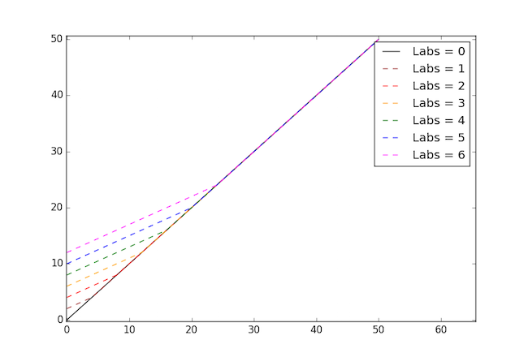

Course Information
Overview
The CS 61 series is an introduction to computer science, with particular emphasis on software and machines from a programmer's point of view.
- CS 61A concentrates on the idea of abstraction, allowing the programmer to think in terms appropriate to the problem rather than in low-level operations dictated by the computer hardware.
- CS 61B will deal with the more advanced engineering aspects of software, such as constructing and analyzing large programs.
- CS 61C concentrates on machines and how they carry out the programs you write.
In CS 61A, we are interested in teaching you about programming, not about how to use one particular programming language. We consider a series of techniques for controlling program complexity, such as functional programming, data abstraction, and object-oriented programming.
61A primarily uses the Python 3 programming language. Python is a popular language in both industry and academia. It is also particularly well-suited to the task of exploring the topics taught in this course. We will also examine the Scheme programming language in the second half of the course.
Mastery of a particular programming language is a useful side effect of 61A. However, our hope is that once you have learned the essence of programming, you will find that picking up a new programming language is but a few days' work.
Prerequisites
Math 1A is a corequisite for 61A. (That is, it may be taken concurrently.)
Programming experience is not a prerequisite for 61A. Many 61A students have had significant prior programming experience, but many do not. However, students without prior experience typically spend a large amount of time each week on the course.
Alternatives
If you don't feel ready for 61A, we recommend CS 10: The Beauty and Joy of Computing, which is an introduction to computer science for non-majors (and majors needing more programming experience). The course will teach students how to program using Snap (based on Scratch), one of the friendliest programming languages ever invented.
There is also a self-paced version of this course, CS 61AS, which fulfills the same requirements. CS 61AS will be offered this summer.
Course Format
You can find the class calendar at cs61a.org. All lectures, handouts, and assignments will be posted there.
Lectures: There are four lectures per week, 90 minutes each. Lecture slides and recommended readings will be posted the night before each lecture.
Lab and Discussion Sections: The course includes two laboratory sections and two discussion section each week.
If you wish to switch sections, simply start attending the section you wish to join. You do not need to update your section on Bear Facts. Seating priority will be given to people who are officially enrolled in a section, but we will all do our best to accommodate your wishes.
Office Hours: Office hours are held by all staff members each week. You can find the office hours schedule here.
Grading
Your course grade is computed using a point system with a total of 300 points:
- Midterm 1, worth 50 points (16.66%).
- Midterm 2, worth 50 points (16.66%).
- Final exam, worth 80 points (26.66%).
- Four projects, worth a total of 90 points (30%).
- Homework, worth a total of 30 points (10%).
Each letter grade for the course corresponds to a range of scores:
A+ 293+ A 280-292 A- 270-279
B+ 255-269 B 232-254 B- 220-231
C+ 212-219 C 202-211 C- 190-201
D+ 180-189 D 170-179 D- 160-169Notice that this scale is nonlinear; the steps are wider in the B range.
This grading formula implies that there is no curve; your grade will depend only on how well you do, and not on how well everyone else does.
Exams
- Midterm 1: Thursday, 7/9 from 6 - 8 PM in 2050 VLSB
- Midterm 2: Thursday, 7/30 from 6 - 8 PM in 155 Dwinelle
- Final: Thursday, 8/13 from 3 - 6 PM in 2050 VLSB
If you have a conflict with an exam, you will fill out a survey near the time of the exam to let us know, and we will offer an alternate exam time.
Midterm recovery points
We understand that exams may not be entirely indicative of your efforts in the class. For this reason, you may earn back a certain number of points for each exam based on your lab submissions.
Each midterm has 6 labs associated with it:
- Midterm 1: labs 1 - 6
- Midterm 2: labs 7 - 12
We compute your recovery points with the following formula:
def recovery_points(score, labs):
return max(score, score / 2 + labs * 2) - scoreThis means if you score 24 or higher, your score remains the same. If you score below 24, you have the chance to recover a few points. The more labs you submit, the more points you can earn back.
0
0

Assignments
Labs
Labs are exercises designed to introduce a new topic. You can complete and submit these during the scheduled lab sections.
Labs are not worth any points. To encourage you to do the labs, we will use lab submissions to calculate midterm recovery points.
Diagnostics
Each Friday, we will release a diagnostic to help you gauge your understanding of that week's material. Diagnostics are purely for your benefit; they are not submitted, and are not used to calculate grades in any way.
Homework assignments
There are 12 homework assignments, worth 3 points each. We will drop your 2 lowest homework grades, for a total of 10 x 3 = 30 points.
You are welcome to discuss homeworks with your classmates, as long as you write your own code and submit your own work.
Projects
There are 4 projects during the semester, for a total of 90 points. Projects are larger assignments intended to combine ideas from the course in interesting ways. The four programming projects are graded on the correctness as well as for code composition (i.e. code clarity and legibility).
You are welcome to complete projects in pairs; your partner can be anyone else enrolled in 61A. You may also work alone.
Late policy
If you cannot turn in an assignment on time, contact your TA and partner as early as possible; depending on the circumstance, we may grant extensions.
- Labs: for midterm recovery policy purposes, we will not accept any late submissions of labs.
- Homework assignments: we will not accept any late submissions of homework. You are allowed to drop 2 homework assignments.
- Projects: Submissions that are within 24 hours after the deadline will only receive 2/3 of the earned score. Submissions that are 24 hours or more after the deadline will receive 0 points.
Learning cooperatively
With the obvious exception of exams, we encourage you to discuss course activities with your friends and classmates as you are working on them. You will definitely learn more in this class if you work with others than if you do not. Ask questions, answer questions, and share ideas liberally.
Since you're working collaboratively, keep your project partner and TA informed. If some medical or personal emergency takes you away from the course for an extended period, or if you decide to drop the course for any reason, please don't just disappear silently! You should inform your project partner, so that nobody is depending on you to do something you can't finish.
Piazza: online forum
If you have questions that others might have as well, regarding projects, homeworks, course policies, etc., post your questions to Piazza, the course discussion forum. Piazza allows you to answer questions from other students.
You are welcome to email your instructor or TA directly, but please try Piazza first! Contact information appears on the staff page of the course website.
Cheating policy
Cooperation has a limit, however, and in 61A that limit is sharing code. Feel free to discuss the problems with others beforehand, but you must write your own solutions. The only student with which you can share code is your homework and project partner.
Since this may be your first computer science class, exactly what constitutes as cheating might be unclear. The following is a list of things you should NOT do. This list is not exhaustive, but covers most of the big offenses:
- Do not copy code from any student who is not your partner.
- Do not allow any student other than your partner to copy code from you.
- Do not post your solutions online publicly. This includes Pastebin and public repositories on Github (you are welcome to use private repositories)
- Do not copy solutions from online. This includes solutions found on public Github repositories.
If you find a solution online, please submit a link to that solution.
We expect you to hand in your own work, take your own tests, and complete your own projects. The assignments and evaluations are structured to help you learn, which is why you're here. The course staff works hard to put together this course, and we ask in return that you respect the integrity of the course by not misrepresenting your work.
The EECS Department Policy on Academic Dishonesty says, "Copying all or part of another person's work, or using reference materials not specifically allowed, are forms of cheating and will not be tolerated." The policy statement goes on to explain the penalties for cheating, which range from a zero grade for the test up to dismissal from the University, for a second offense.
For this class, the policy will be that you receive a score of -50% of the assignment score. For example, if an assignment is worth 10 points, you will receive a -5 out of 10.
Rather than copying someone else's work, ask for help. You are not alone in this course! The entire staff is here to help you succeed. If you invest the time to learn the material and complete the projects, you won't need to copy any answers.
Resources
Tutoring
Starting the second week of class, we will have tutoring sessions every week. All tutoring-related announcements, scheduling, and handouts will be posted on the tutoring page
At tutoring, we will review class material from the previous week in a small group setting (around 6 students per session), so that you have the opportunity to get more personalized help.
Because of we have a limited number of tutors, we will only be able to accommodate around half the students in the class every week. Every week, we will have sign-ups on the tutoring page.
Textbook
The online textbook for the course is Composing Programs, which was created specifically for this course. Readings for each lecture appear in the course schedule.
We will occasionally differ from the material found in Composing Programs. As a result, we recommend the lecture notes, labs, and discussion handouts as your primary source of information.
Computer Resources
The computing laboratories in 271, 273, 275, and 277 Soda are our primary lab rooms, although the CS 61A accounts can also be used from any EECS Instructional lab in Soda or Cory Hall. The lab is normally available for use at all times, but you need a card key for evening access to the lab.
- Current UCB students: If you are enrolled in the course, your Cal student ID serves as your card key and will automatically be activated for access to the Soda second floor labs (including entering the building). You do not have to do anything, unless for some reason it doesn't work, then see below.
- Concurrent/other students: You can fill out an application and obtain a white card key from 387 Soda Hall (the front desk). There is a small fee for access.
Be respectful of the lab space. Please don't steal the chairs, and definitely do not eat or drink in the lab. Don't unplug anything; unplugged computers make our hard-working instructional computing team very sad. If you see someone disrupting the space, ask them to stop.
A Parting Thought
Grades and penalties aren't the purpose of the course. We actually just want you to learn. We're very excited to have such a large and enthusiastic group of students this semester. We want all of you to be successful here. Welcome to 61A!